Claude Code /powerup 教程：课程与使用边界解析
大家好，我是小林。
最近有林友问我：「小林，Claude Code 我已经装好了，但打开终端之后一脸懵，不知道从哪里开始学，有没有什么系统的学习方式？」
说实话，这个问题我之前也很难回答。因为 Claude Code 的功能太多了，光斜杠命令就有几十个，快捷键、配置文件、子代理、MCP 扩展……
但现在不一样了。
本文记录的是某个版本中的 /powerup 体验。Claude Code 的命令、课程数量、界面和发布时间会随版本变化，不能把文章中的版本号当作当前安装要求；使用前应运行 claude --version 并查看当前官方文档/发行说明。
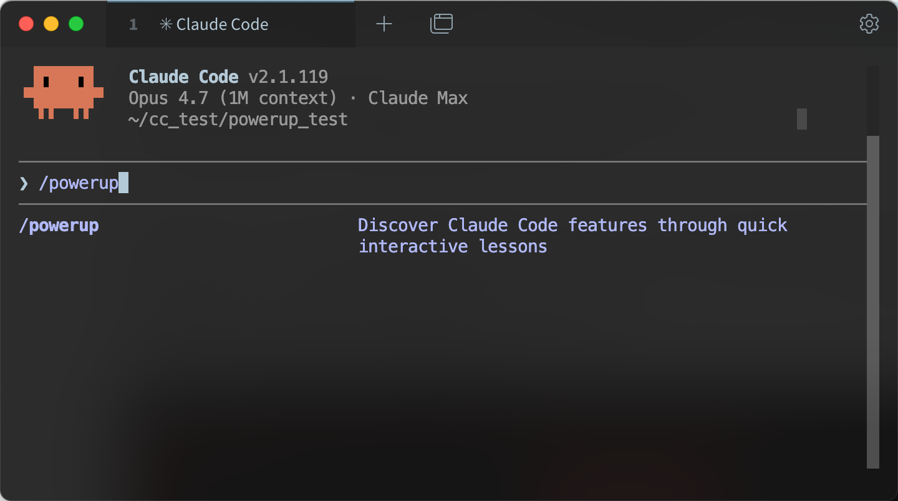
如果当前版本提供这个命令，它会在终端中打开一套交互式教程；课程数量、动画和内容以实际界面为准，本文以下按当时记录的课程主题讲解。
它可以作为入门路径，但不能替代对权限、数据处理、工具调用和版本差异的理解。
今天这篇文章按一组常见主题梳理 /powerup 及相关操作，帮助你建立对 Claude Code 核心边界的认知。
教程是否记录进度、如何计算完成度，也属于界面实现细节；不要把进度条当作能力或安全验证。
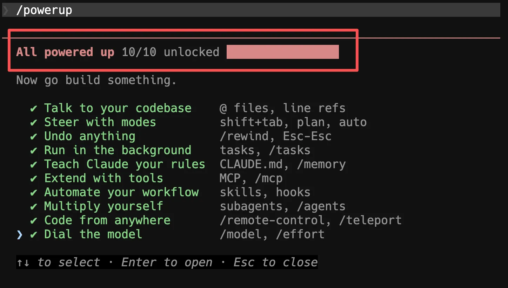
废话不多说，咱们开干！
先确认你的版本
如果当前版本没有 /powerup，可能是版本、发行渠道、账号或产品配置差异；先确认版本和官方说明，不要只按本文中的旧版本号升级。
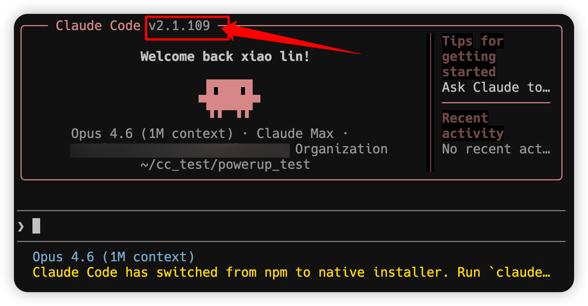
怎么查版本？在终端里输入：
claude --version
如果需要升级，请使用当前官方推荐的安装/更新方式，例如检查包管理器、原生安装器或组织镜像配置：
请按当前安装渠道的官方更新命令执行；不同渠道的命令不能混用，也不要在没有确认来源时执行网络安装脚本。
升级后重新运行 claude --version，并确认目标命令在当前发行渠道可用。
好，版本没问题之后，我们直接进入正题。
打开 /powerup
在终端里启动 Claude Code：
claude
然后在 Claude Code 的输入框里输入：
/powerup
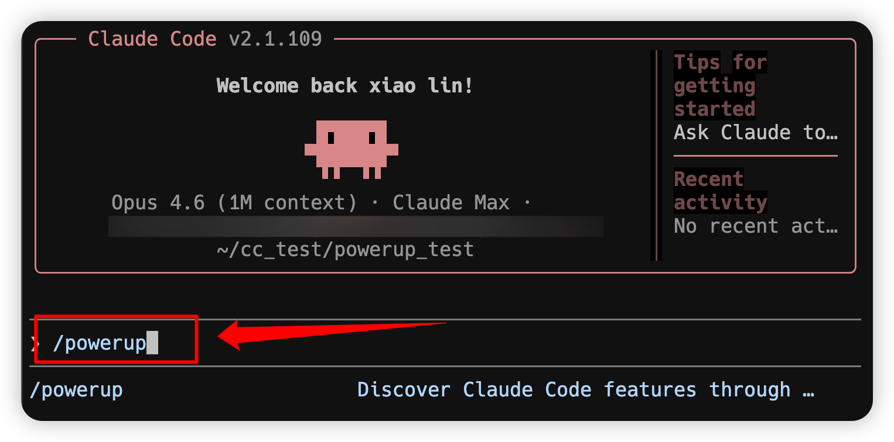
你会看到这样一个界面：
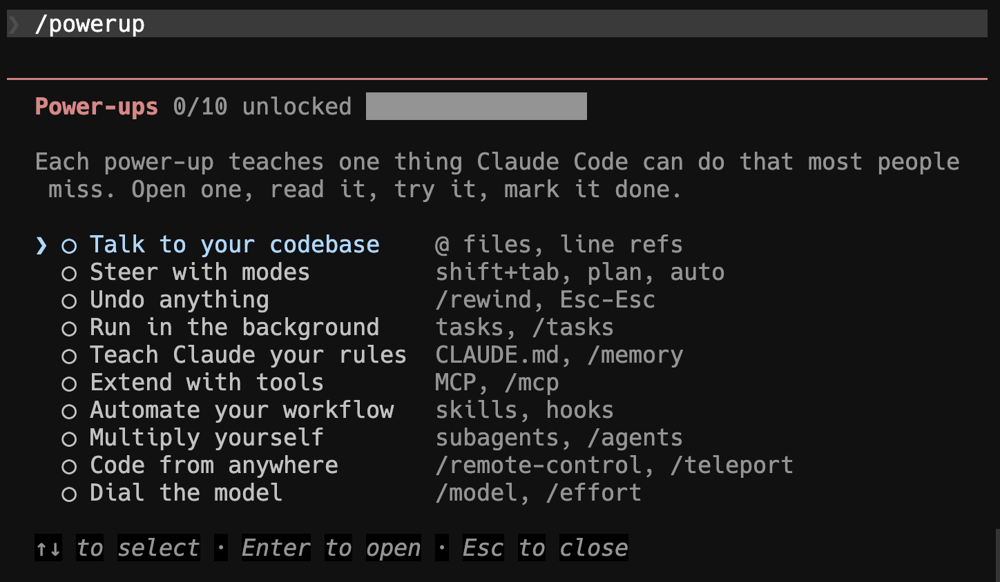
看英文困难的同学也不怕， 我也针对上面页面的内容，做了一个翻译：
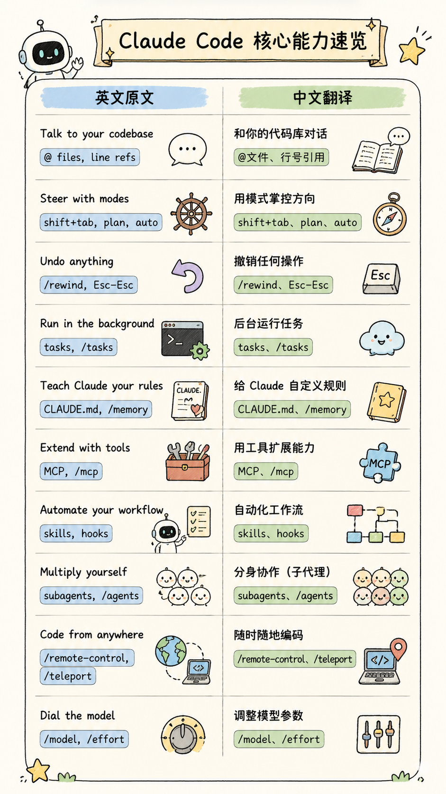
你看，一共 10 个课程，每类都标注了对应的核心命令或操作。右上角还有进度条，每完成一个课程就会解锁一格，有点像打游戏过关的感觉。
你可以用上下方向键选择课程，按回车进入。每个课程会先展示一段文字说明，然后播放一段动画演示，告诉你这个功能怎么用。
接下来，小林就按顺序，把这 10 大类课程涉及的知识点，一个一个给大家讲清楚。
01｜Talk to your codebase：与代码库对话
第一个课程，教你最基本也是最高频的操作：怎么让 Claude「看到」你的代码。
你可能会想，Claude Code 不是已经打开了吗？它不就能看到我的代码了吗？
嗯，能是能，但它能看到和读取什么取决于工作目录、工具、权限、忽略规则和任务路径。若不指定范围，它可能搜索较多文件并消耗上下文，因此应主动限定目标。
所以，更好的做法是：你主动告诉它该看哪个文件。
怎么告诉它？用 @ 符号。
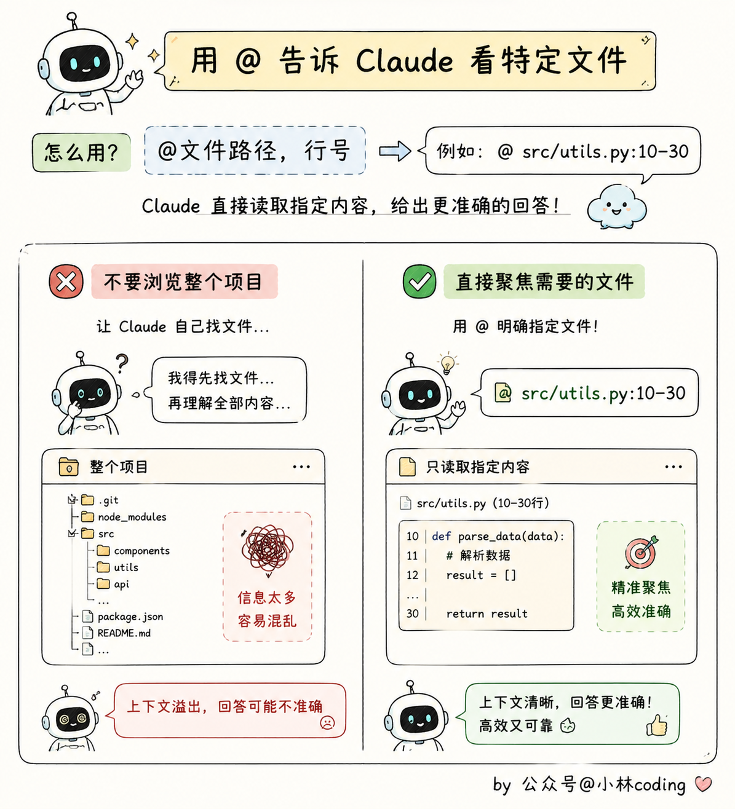
进入第一个课程，claude 就是在教你这个事情。
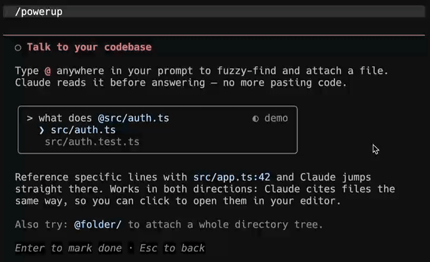
如果你确定明白了，输入回车就代表掌握了，然后如果想回到命令页面，就输入 ESC 键退出 /powerup 命令的页面就行。
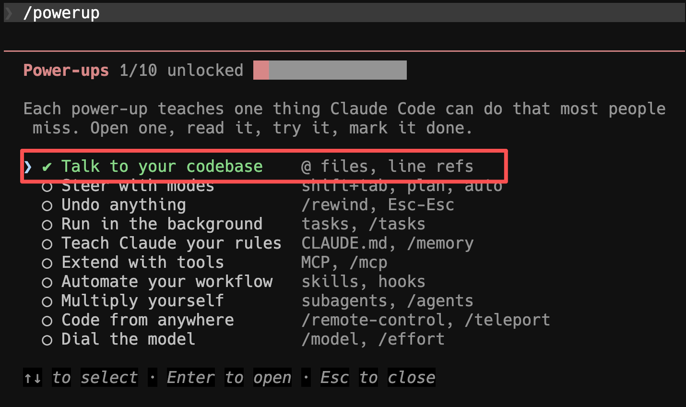
@ 引用文件
在输入框里，你可以直接用 @ 来引用文件或目录：
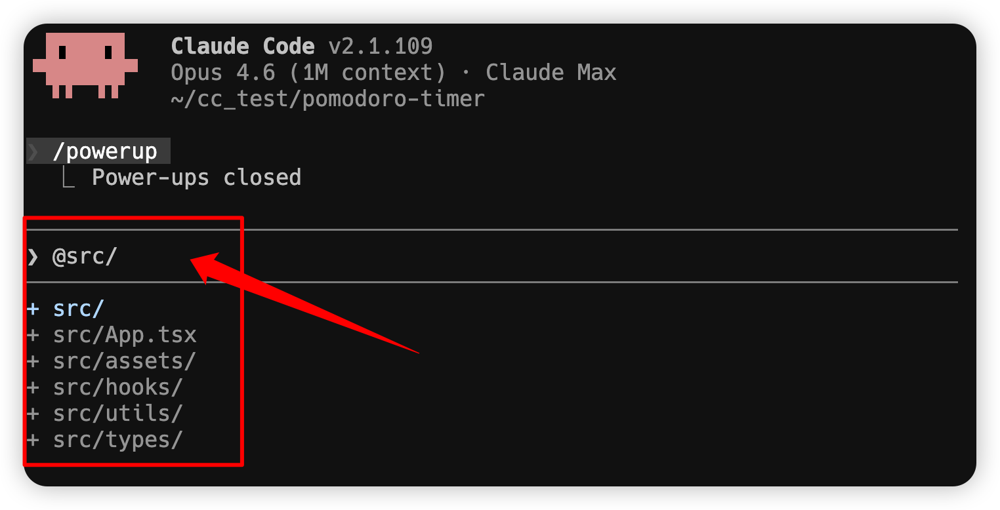
比如：
请帮我优化这个组件的样式。
@src/components/Timer.tsx
这样是在提示中提供一个明确入口，但不等于模型绝对不会读取其他文件；权限、依赖分析和任务需要仍可能触发额外访问，应结合 permissions 和审计控制范围。
@ 的用法有这几种：
- @./src/App.tsx：引用单个文件，通常会把它作为任务上下文入口
- @./src/components/：引用整个目录或目录内容的入口，实际读取范围取决于版本、权限和任务
- @./src/App.tsx @./src/styles/global.css：引用多个文件，用空格隔开就行
如果你只想让 Claude 看某个文件的一小段，没有什么花哨的语法，直接在提示词里用中文说清楚就行，比如「请重点看 Timer.tsx 的第 10 行到第 20 行」，Claude 会自己定位过去。
为什么 @ 这么重要？
因为它能帮你省下大量上下文空间。
Claude Code 的上下文窗口、输出预算和模型可用上限会随模型、计划、接口和版本变化，不能用固定的 200K/1M 作为所有安装的默认值。
你可以把它理解为 Claude 的「短期记忆」，这个记忆是有容量限制的。如果你不给 Claude 指定文件，它为了理解你的需求，可能自己去搜索和读取项目里的很多文件，每一行代码都会占用上下文空间。
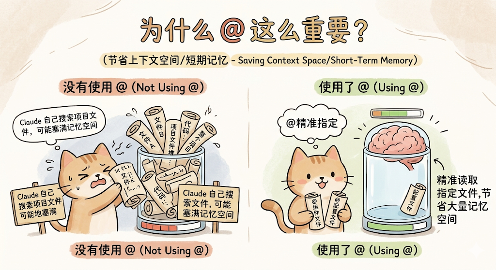
但如果你用 @ 指定文件，通常能减少搜索范围；例如只指定一个组件文件可能比扫描整个仓库更省上下文，但模型仍可能需要读取导入、测试或配置来完成任务。
用 permissions 规则屏蔽敏感文件
还有一种情况：你的项目里可能有一些文件，不希望某类工具访问，比如含密钥的配置文件、日志、临时文件等等。敏感数据不应只依赖模型遵守提示。
这时候可以在 .claude/settings.json 里用 permissions.deny 规则把这些路径挡住：
{
"permissions": {
"deny": [
"Read(./.env)",
"Read(./.env.*)",
"Read(./secrets/**)"
]
}
}
配上之后，匹配到的读取请求可能被权限规则拒绝；还要防止通过 Bash、MCP、符号链接、日志或外部服务间接读取，定期测试 deny 规则并对真正的密钥做隔离/撤销。
一句话总结：@ 是给 Claude 发精确地址，让它直奔目标，不迷路还省油。养成习惯，能 @ 就 @。
02｜Steer with modes：用模式驾驭 Claude
第二个课程，教你怎么控制 Claude 的工作方式。
你有没有遇到过这种情况：让 Claude 改个代码，它每改一个文件都要弹出来问你「允许吗？」，改十个文件要确认十次，搞得你心烦意乱？
又或者反过来：让 Claude 自由发挥，结果它一通操作猛如虎，改了二十个文件，你连它改了什么都不知道？
这两种体验都不好。第一种太烦，第二种太危险。
那有没有一种方式，能让你在不同场景下灵活控制 Claude 的「自由度」？
有，用 Shift+Tab 切换工作模式。
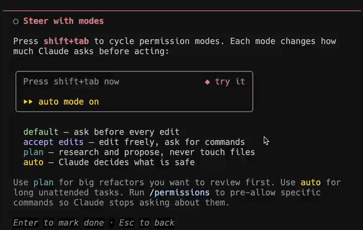
常见权限/工作模式（以当前版本为准）
某些版本会提供多种权限或工作模式，并可用快捷键/命令切换；模式名称、数量和默认值可能变化，先以当前界面与设置为准：
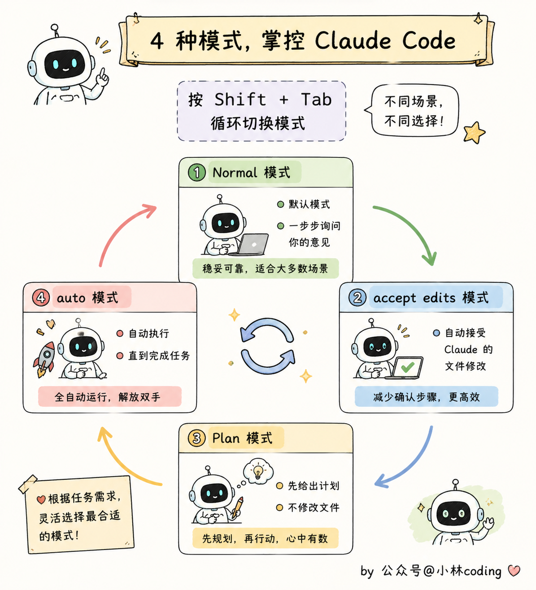
Normal 模式（默认）
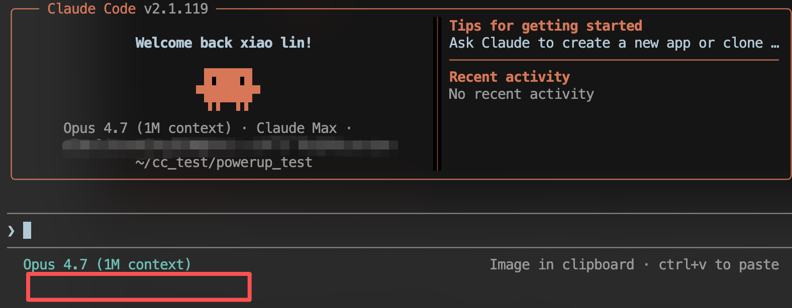
这种模式通常会对未授权的工具或副作用请求进行确认，是学习和不确定任务的较保守起点；它不等于每一步都必然弹窗，已有授权、规则和工具类型会影响行为。
确认只授权当前产品定义的操作，仍应检查路径、命令、参数和外部目标；拒绝后模型也可能提出替代方案。
这种模式适合你不太确定 Claude 会做什么的场景，或者刚开始用 Claude Code、还不太信任它的阶段。虽然多了一步确认，但心里踏实。
accept edits（自动接受编辑）
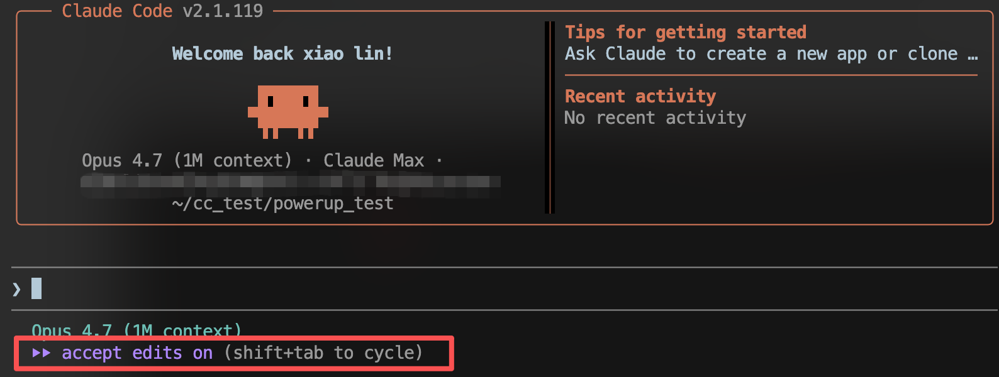
某些版本的 accept edits 类模式会减少文件编辑确认，但命令、删除、网络或外部写入仍可能按权限策略询问；不要把模式名称当作完整的安全策略。
什么意思呢？就是你已经信任 Claude 改代码这件事，但对它「执行命令」这种动作还是想留个把关的机会。比如它想跑 npm install 或者 rm 之类的命令，会先弹个确认让你看一眼。
它可以作为日常迭代的候选档位，但要结合仓库备份、受限工作区、Hooks、CI 和人工审查，避免把“少确认”误认为“安全”。
Plan 模式（计划模式）
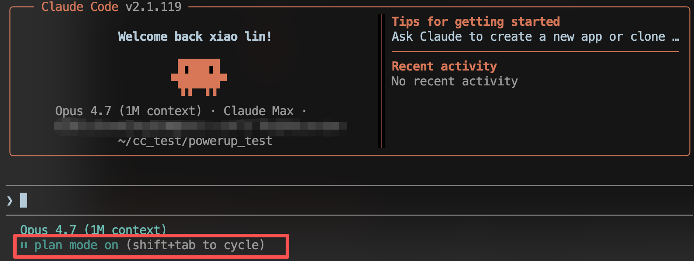
Plan 类模式通常用于只读分析与方案设计；“不改文件”取决于当前模式、工具授权和配置，仍应检查是否有外部副作用或命令执行权限。
等你看完方案觉得没问题，再告诉它「按这个方案执行」，它才会开始动手。
Plan 模式特别适合复杂的开发任务。比如你要重构一个模块，或者做一个比较大的新功能，先让 Claude 在 Plan 模式下帮你规划一下，看看它的思路对不对，比直接让它动手改要安全得多。
auto（自动模式）
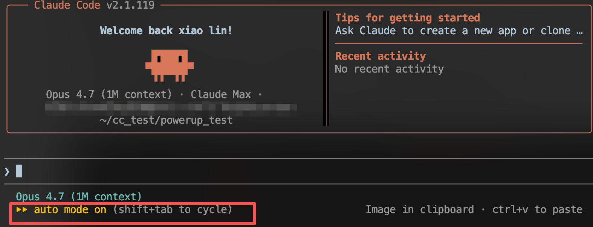
某些版本还提供高自动化/绕过部分确认的模式。它可能减少文件与命令审批，但不应依赖模型或后台分类器作为唯一安全边界；高风险操作应在沙箱、最小权限和可恢复工作树中运行。
这类模式风险更高：如果不监督，可能改错文件、执行破坏性命令或触发外部副作用。长任务应配合超时、预算、审批点、日志、Git/worktree 和回滚；不能把它当作无人值守保证。
不同模式的具体差异由版本和权限设置决定。选型时应逐项验证：文件读写、命令、网络、MCP、删除、提交与外部发布分别是否需要确认。
我的建议
刚入门时，先用最保守的默认/确认模式，观察 Claude 每一步的工具调用和参数。
熟悉后，可在可恢复的分支或 worktree 中减少低风险编辑确认，但命令和外部写操作仍保留审查。
遇到复杂任务（重构、新功能），先用 plan 出方案，看完再执行。
只有在风险已评估、权限已收窄、过程可观测且可回滚时，才考虑高自动化模式；不要以“完全信任”替代控制。
一句话总结：工作模式本质上是在调整授权与审批摩擦。先确认当前版本的模式语义，再按风险从保守到自动化逐步验证。
03｜Undo anything：Claude 改错了？一键撤销
第三个课程，教你一个所有新手都会用到的操作：撤销。
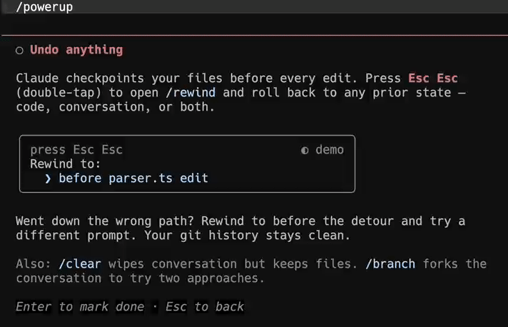
为什么说新手可能会用到？因为模型可能误解需求、走错方向或改动不该改的文件。
这不是 Claude 的问题，而是 AI 编程的常态。它可能误解了你的意思、走错了方向、改了一个不该改的文件。
这时候怎么办？手动去改回去？文件多了你根本记不住它改了哪些地方。
部分版本提供会话内的撤销/回滚入口，但它不是完整备份。
两种撤销方式
方式一：连按两次 Esc
在输入框为空的状态下，快速连按两次 Esc 键，就会打开回滚菜单。这个菜单会显示一个时间线，列出 Claude 最近做的每一次操作：
最近的操作：
❯ 1. [14:35] 修改了 useTimer.ts（添加音效逻辑）
2. [14:32] 修改了 Timer.tsx（添加音效触发）
3. [14:28] 创建了 notification.ts（新建文件）
4. [14:25] 修改了 Controls.tsx（重置按钮逻辑）
如果当前版本提供该菜单，可以选择会话中的某个检查点；回滚前先确认 diff 和未提交改动，具体会影响哪些文件与上下文要以界面说明为准。
方式二：输入 /rewind 命令
若当前版本支持，效果类似从命令入口触发回滚：
/rewind
回滚的范围
需要注意的是，回滚可能同时影响部分文件改动和对话状态，但具体范围由版本与操作类型决定。
不要把它理解为完整的时间旅行：外部 API、数据库、安装命令、提交、网络发布和未被追踪的文件可能无法撤销，对话摘要也可能保留部分信息。
这比你自己手动改文件要彻底得多。
更靠谱的方式：Git
即使有内置回滚，也应把 Git、沙箱和备份作为更可靠的恢复手段；内置回滚的覆盖范围不能替代版本控制。
如果 Claude 执行了 npm install 之类的命令，生成了 node_modules、package-lock.json 等文件，回滚是管不了这些的。
所以，如果你要做比较大的改动，最靠谱的方式还是先用 Git 存一份档：
git add .
git commit -m "改动前的存档"
万一 Claude 改坏了，先查看状态与 diff，再针对已确认的路径恢复；不要直接恢复整个工作区：
git diff -- <verified-path>
git restore --source=HEAD -- <verified-path>
一句话总结：内置回滚可用于会话内撤销，但不覆盖外部副作用；大改动前使用 Git/worktree，恢复前核对状态、diff 和具体路径。
04｜Run in the background：让 Claude 在后台干活
第四个主题介绍在当前版本中可能提供的后台任务能力：让长时间运行的命令与主对话分离。
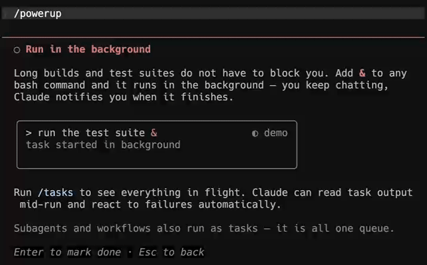
什么意思呢？
举个例子。你让 Claude 跑项目构建命令 npm run build，它可能需要一段时间。后台执行是否可用、输出如何保存和任务是否占用当前会话，取决于工具与版本。
如果任务支持后台运行，你可以继续处理其他对话；但共享工作区可能产生竞态，应该避免并行修改同一文件，并明确任务状态、超时和取消方式。
怎么在后台运行？
若当前版本支持，可以用自然语言请求后台执行；模型是否选择后台模式仍应在工具调用预览中确认：
请帮我在后台运行 npm run build，跑完了告诉我结果。
Claude 可能使用 Bash 工具的后台参数执行；不要假定它一定这样做，也不要把 shell 的 &、工具后台任务和 Claude 会话任务混为一谈。
任务完成或失败后，结果是否主动回传取决于版本和会话状态；生产流程应能查询状态、读取日志、取消任务并处理超时。
查看后台任务
如果你想看看当前有哪些后台任务在跑，可以用：
/tasks
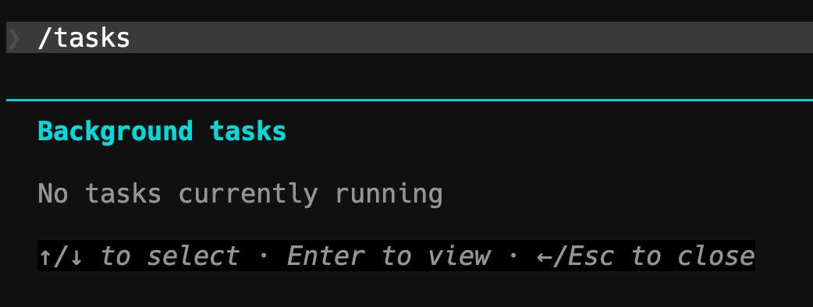
如果当前版本支持 /tasks，它通常用于查看后台任务；命令名称和展示字段应以当前帮助为准。
适合什么场景？
后台运行特别适合这些「耗时长但不需要你盯着」的任务：
- 项目构建（npm run build）
- 跑测试用例（npm run test）
- 安装依赖（需审查来源、锁文件和网络访问）
- 数据库迁移（通常需要单独审批、备份和回滚方案）
这些任务可能耗时较长，后台执行可以改善交互体验，但不会自动提高总吞吐，还可能引入并发、资源和日志管理成本。
一句话总结：后台任务是工具/版本能力，先确认执行方式、权限、状态、日志与取消路径；若支持，可用 /tasks 查看任务。
05｜Teach Claude your rules：让 Claude 记住你的规则
第五个课程，可能是所有课程里对你日常使用影响最大的一个。
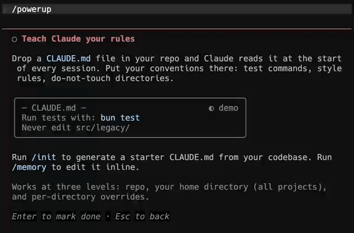
为什么这么说？因为你一定会遇到这个烦人的场景：每次重新打开 Claude Code，或者用 /clear 清空对话之后，你都要重新告诉 Claude「我这个项目是做什么的、用了什么技术栈、代码规范是什么……」
一遍两遍还行，多了真的很烦。有没有办法让 Claude 永远记得你的项目信息？
有，用 CLAUDE.md。
CLAUDE.md 是什么？
CLAUDE.md 是一个放在你项目根目录的文件，Claude Code 每次启动的时候都会自动读取这个文件的内容，把它当作理解你项目的「背景资料」。
你可以把它理解为 Claude 的「项目记忆」。只要你在这个项目目录下启动 Claude Code，它就知道你的项目是做什么的、用了什么技术栈、代码规范是什么，不用你每次重新交代。
怎么创建 CLAUDE.md ？
最简单的方式是用 /init 命令：
/init
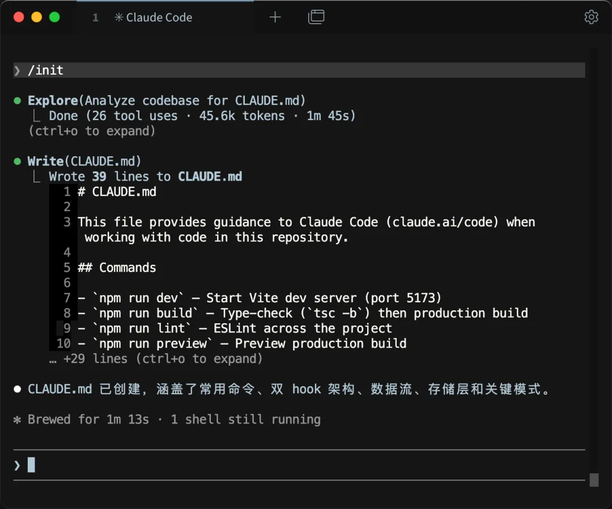
Claude 会扫描你的项目结构，然后自动生成一份 CLAUDE.md，里面包含项目的基本信息、技术栈、目录结构等。
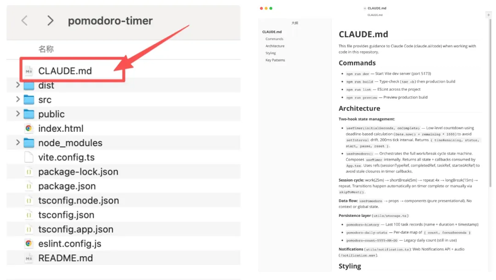
你也可以自己手动创建这个文件，把你觉得 Claude 需要知道的信息写进去。一份好的 CLAUDE.md 通常包含这几部分：
# 项目名称
一句话说清楚这个项目是做什么的。
## 技术栈
- React 10 + TypeScript + Tailwind CSS
## 代码规范
- 使用函数式组件，不用 class 组件
- 变量命名用驼峰命名法
- 组件文件名用 PascalCase
## 项目结构
- src/components/ - UI 组件
- src/hooks/ - 自定义 Hook
- src/utils/ - 工具函数
写什么、不写什么？
CLAUDE.md 有一个很重要的原则：越精准越好，不是越长越好。
太长的 CLAUDE.md 会占用大量上下文空间，反而让 Claude 工作效率下降。所以每写一条信息之前，先问自己一个问题：「如果删掉这条，会不会让 Claude 犯错？」如果不会，就不写。
应该写的： 项目简介、技术栈、代码规范、目录结构 不应该写的： 详细的 API 文档（太长）、每次都变的临时需求、过于泛泛的描述
/memory 管理记忆
除了项目级的 CLAUDE.md，Claude Code 还有一个 /memory 命令，可以帮你管理「个人记忆」。这些记忆是跨项目的，不管你在哪个项目里，Claude 都会记住。
比如你可以用它来存储你的通用编码偏好：
/memory
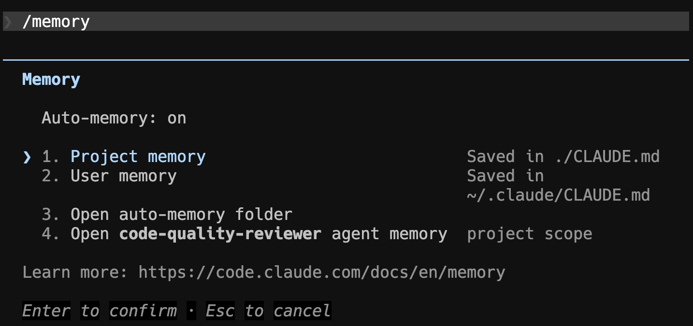
它会打开一个编辑界面，让你查看和修改所有的记忆文件，还能开关 auto memory（自动记忆）功能。
另外还有一种更省事的方式：直接用自然语言告诉 Claude「记住这件事」，比如：
请记住：我这个项目统一用 pnpm，不用 npm。
Claude 会自己判断这条信息值不值得记，觉得值得记就会写到 auto memory 里，下次也会记得。
CLAUDE.md 的几个层级
Claude Code 的 CLAUDE.md 实际上支持好几个层级，按照日常最常用的顺序是这样的：
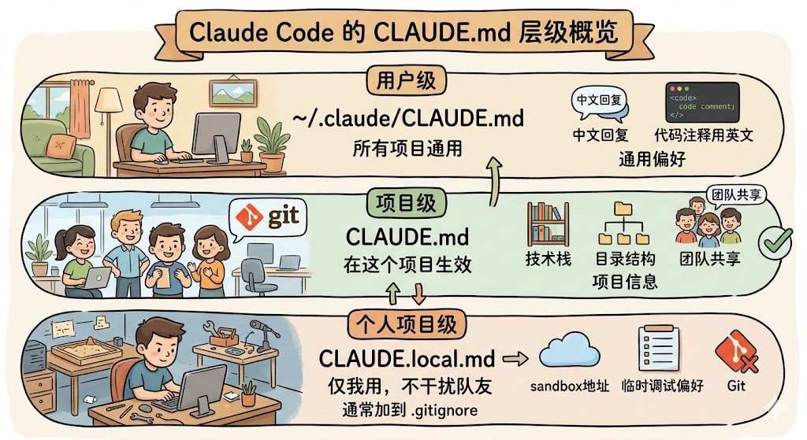
- 项目级：放在项目根目录的
CLAUDE.md（或者.claude/CLAUDE.md），只在这个项目里生效。适合写项目相关的信息，比如技术栈、目录结构。这个文件可以提交到 Git 里，团队成员共享。 - 个人项目级：
CLAUDE.local.md，也放在项目根目录，但通常加到.gitignore里不提交。适合写你自己的临时调试偏好、sandbox 地址这种「只有我用」的内容，不会干扰到队友。 - 用户级：放在你 home 目录下的
~/.claude/CLAUDE.md，在所有项目里都生效。适合写你个人的通用偏好，比如「请用中文回复」「代码注释用英文」。
这几个层级的内容在启动时会一起合并进上下文，越具体的层级优先级越高（项目级 > 用户级）。
一句话总结：CLAUDE.md 是给 Claude 装的「长期记忆」，写一次，永远记得。/init 快速创建，/memory 管理个人偏好，记得保持精简。
06｜Extend with tools：用 MCP 给 Claude 装外挂
第六个课程，教你一个让 Claude Code 能力大增的机制：MCP。
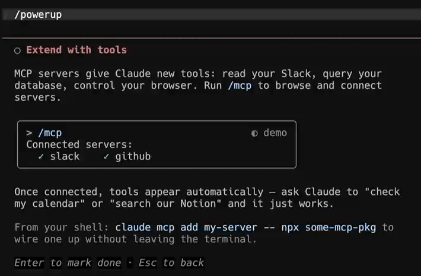
MCP 全称是 Model Context Protocol，翻译过来叫「模型上下文协议」。听着很唬人对吧？但其实你可以把它理解为一个「外挂接口」。
什么意思？
Claude Code 本身能做的事情是有限的：读写文件、执行命令、搜索代码。但如果你想让 Claude 做更多的事情呢？比如让它帮你搜索网页、操作数据库、调用第三方 API？
MCP 就是干这个的。它让你可以把外部工具「接入」Claude Code，让 Claude 能调用这些工具的能力。
Claude Code 就像一台电脑，出厂自带了几个基本软件（文件管理器、命令行终端、代码编辑器）。而 MCP 就像是 USB 接口，你可以通过这个接口给电脑接上打印机、摄像头、手柄等各种外设，让电脑能做更多的事情。
怎么管理 MCP？
用 /mcp 命令：
/mcp
它会打开一个管理界面，你可以在这里添加、删除、配置 MCP server。
MCP server 就是那些「外设」。每个 MCP server 提供不同的能力，比如：
- Brave Search MCP：让 Claude 能搜索网页
- Postgres MCP：让 Claude 能操作 PostgreSQL 数据库
- Playwright MCP：让 Claude 能控制浏览器做自动化测试
- Filesystem MCP：让 Claude 能访问指定目录之外的文件
怎么添加 MCP server？
加 MCP server 主要有两种方式，一种是命令行直接加（推荐），一种是手动改配置文件。
方式一：用 **claude mcp add** 命令（推荐）
直接在终端里跑一条命令就行，连 JSON 都不用动。命令的基本格式是这样：
claude mcp add <名字> -- <启动 MCP server 的命令>
中间那个 -- 是分隔符，告诉 Claude Code「双横杠前面的是给 claude 的参数，后面的是用来启动 MCP server 的命令」。
方式二：手动改 settings.json
你也可以在 .claude/settings.json 或 ~/.claude/settings.json 里直接写配置：
{
"mcpServers": {
"你给这个 server 起的名字": {
"command": "npx",
"args": ["-y", "对应的 MCP server 包名"],
"env": {
"需要的API密钥": "你的值"
}
}
}
}
效果跟命令行方式一样。如果是团队项目，可以把这份配置写到项目根目录的 .mcp.json，提交到 Git，让队友拉下来就能用。
实战：用 12306-mcp 查火车票
光说不练假把式，小林带你装一个真实的 MCP，体验一下。
我们以社区里很火的 12306-mcp 为例。这个 MCP 是开源项目（GitHub 上的 Joooook/12306-mcp），接入之后，你就可以直接在终端里用自然语言查 12306 的余票、车次、中转方案。
第一步：用命令安装
打开终端，跑下面这条命令：
claude mcp add 12306 -s user -- npx -y 12306-mcp
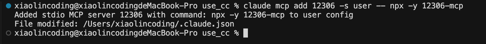
这条命令的意思就是：给 Claude Code 加一个名字叫「12306」的 MCP server，作用域是 user（在所有项目里都能用），启动方式是 npx -y 12306-mcp。
跑完之后可以用：
claude mcp list
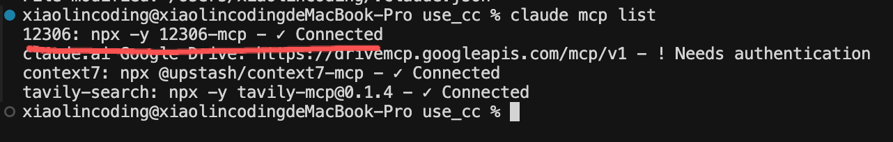
或者在 claude 里用 /mcp 命令
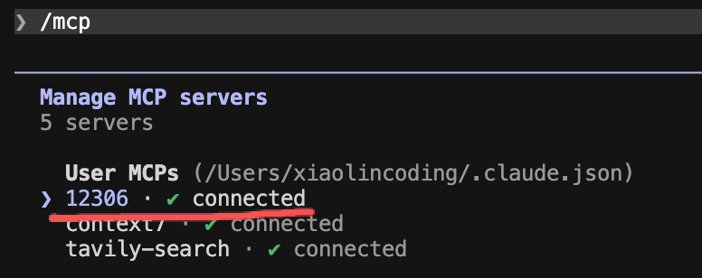
确认一下 12306 是不是真装上了。
第二步：在 Claude Code 里直接问
启动 Claude Code，然后用大白话问就行：
帮我查 5 月 1 日北京到上海的高铁票，要二等座。
Claude 会自动识别出这是火车票查询任务，调 12306-mcp 去查实时数据，然后把车次、时间、票价、余票整理成一张清晰的列表给你。
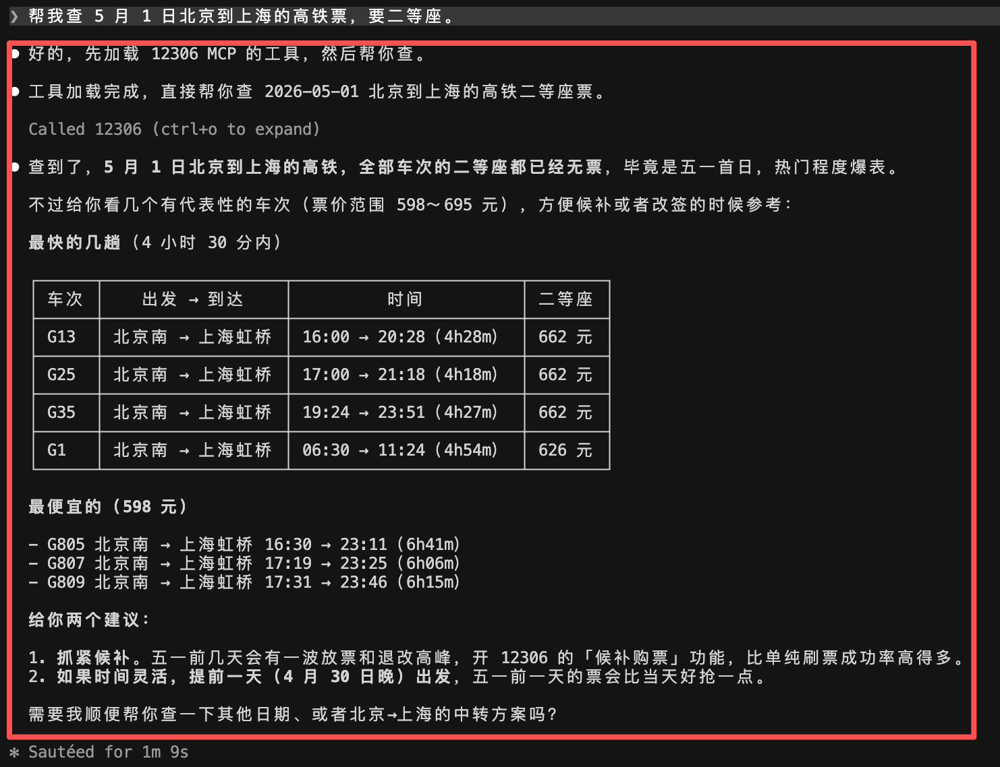
你想想看，你都不需要打开 12306 网站，也不需要记任何 API，一句话搞定。
如果想换一个查询，比如「再加一个 5 月 7 日返程的」，直接在对话里说就行，Claude 会自己调用对应的工具。
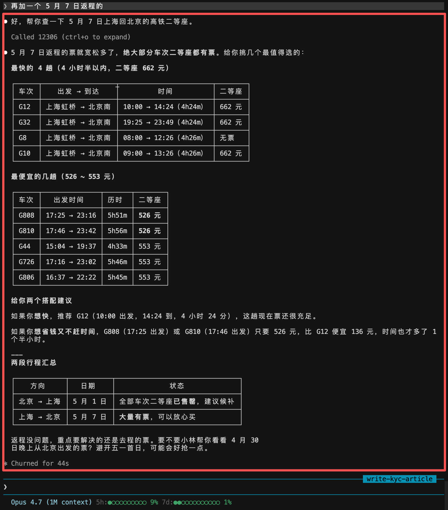
移除 MCP server
如果某个 MCP 不想用了，直接：
claude mcp remove 12306 -s user
就能干净地卸掉。
MCP 的价值
MCP 最大的价值在于「扩展」。Claude Code 出厂自带的能力可能不够用，但通过 MCP，你可以按需接入各种工具，让 Claude 变成一个越来越强大的全能助手。
而且 MCP 是一个开放的协议，社区里有大量现成的 MCP server 可以用，你甚至可以自己开发一个。
一句话总结：MCP 是给 Claude Code 装外挂的接口，用 /mcp 管理。通过接入不同的 MCP server，让 Claude 能搜索网页、操作数据库、控制浏览器，能力无限扩展。
07｜Automate your workflow：让 Claude 自动化你的工作流
第七个课程，教你两个让 Claude Code 更「聪明」的机制：Skills 和 Hooks。
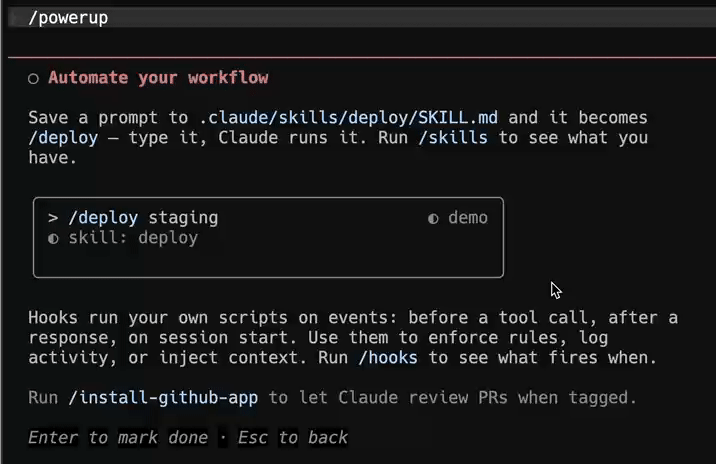
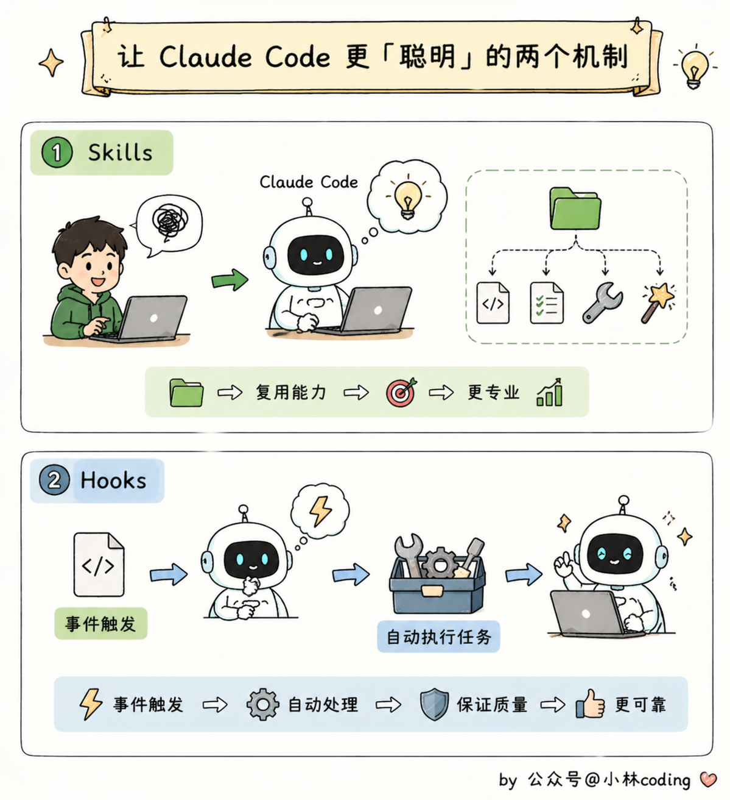
Skills：给 Claude 装技能包
Skills 是 Claude Code 的插件机制。你可以把它理解为 Claude 的「技能包」，安装之后，Claude 在某个特定领域会表现得更好。
比如有一个叫 frontend-design 的 Skill，专门用来生成高质量的前端界面。启用之后，Claude 在做前端页面的时候，设计水平会有明显的提升。
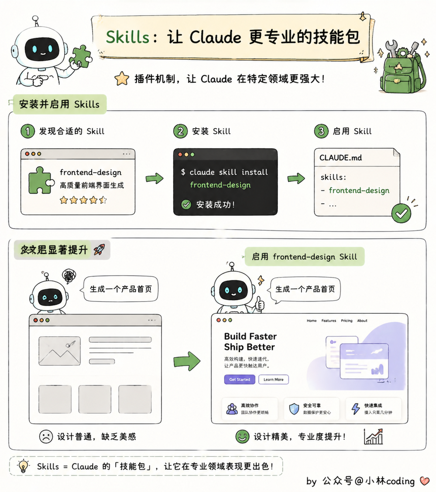
Skill 怎么装？其实一份 Skill 就是一个 SKILL.md 文件（外加一些可选的辅助文件），只要把它放到下面这几个目录里，Claude Code 就会自动识别：
~/.claude/skills/<技能名>/SKILL.md：个人全局可用.claude/skills/<技能名>/SKILL.md：当前项目可用
你既可以自己手写一份 SKILL.md，也可以通过 /plugin 命令去安装打包好的插件（plugin 里可以带 skills、hooks、命令等等，是一个更大的集合）。
实战：用一行命令装上 frontend-design
光讲机制太抽象，咱们直接装一个真的 skill 上手玩玩。
就拿 frontend-design 来说，这是 Anthropic 官方推出的明星 skill，目前装机量已经超过 27 万次。它的核心作用，是把 Claude 生成前端代码时的那种「一眼 AI 味」给治好，让你拿到的页面更像真人设计师做出来的。
怎么装呢？打开 Claude Code，输入下面这条命令：
/plugin install frontend-design@claude-plugins-official
来解释一下这条命令。@ 前面的 frontend-design 是 skill 的名字，@ 后面的 claude-plugins-official 是它所在的「官方插件市场」。这个官方市场是 Claude Code 启动时自带的，不用你提前 add，直接装就行。
装完之后，如果你不想重启 Claude Code，就跑一下：
/reload-plugins
让新 skill 立刻在当前会话生效。
接下来就是见证奇迹的时刻。你直接说一句话试试：
帮我设计一个 SaaS 产品的定价页面，三档套餐。
Claude 一识别这是前端任务，就会自动加载 frontend-design 的设计规范，按照里面的字体、间距、配色、布局规则去生成代码。
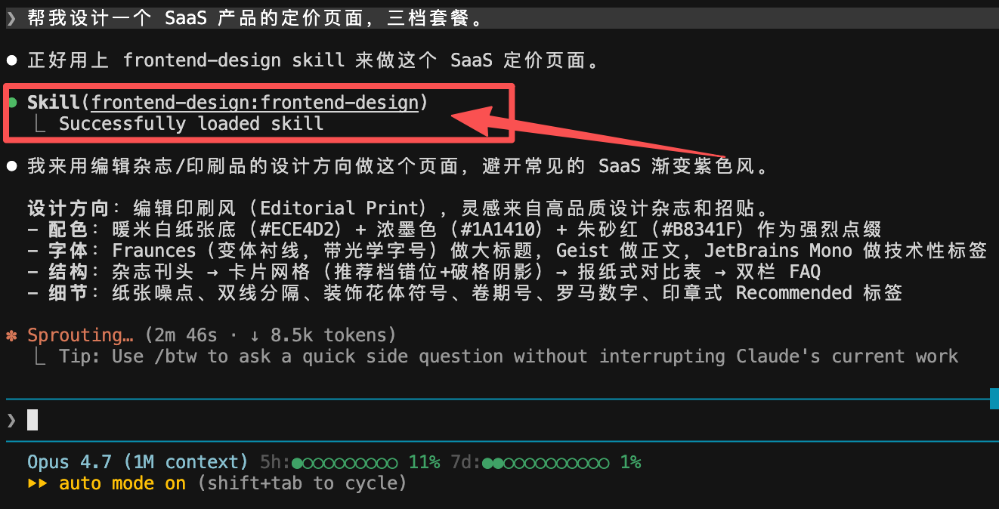
生成出来的页面，会比你不装这个 skill 的时候，质感高一大截。
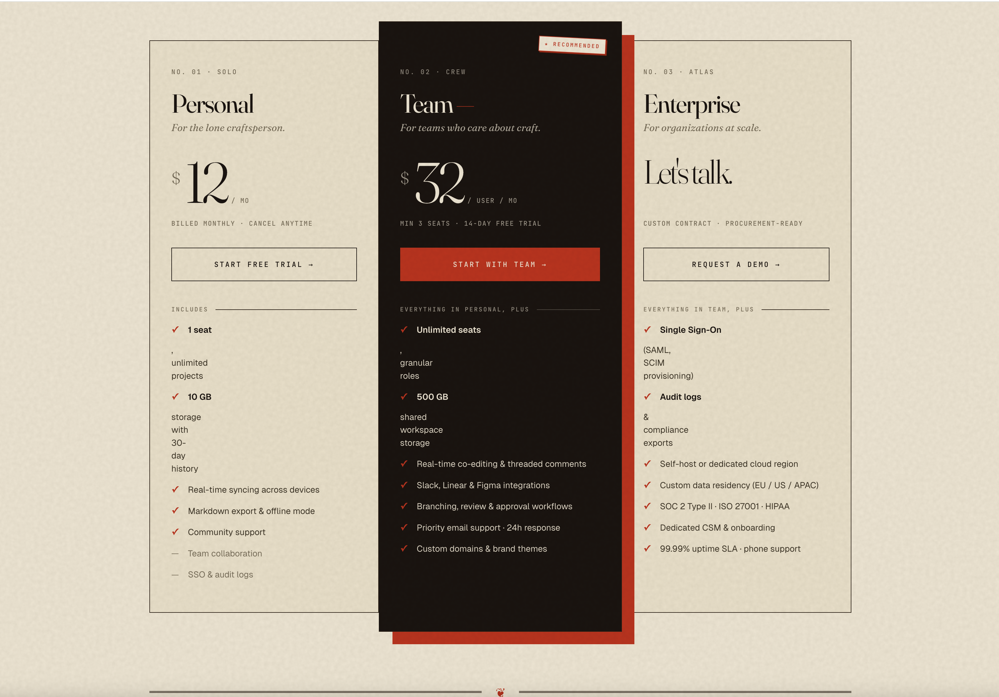
你也可以显式 / 触发：
/frontend-design 帮我重新设计这个页面的样式
如果哪天不想用了，卸载也是一条命令的事：
/plugin uninstall frontend-design@claude-plugins-official
干净利落。
Skills 的本质是一份由专业人员编写的指南文件（SKILL.md + 可选的参考材料），里面包含了复杂的指令、模板和参考文档。当 Claude 加载了这个 Skill，就相当于「临时培训」了一下，按照更专业的标准来输出结果。
Hooks：给 Claude 的操作加「钩子」
Hooks 是 Claude Code 的自动化钩子机制。
它的工作原理很简单：你在某个操作「之前」或「之后」挂一个自定义脚本，Claude 每次执行这个操作的时候，就会自动触发你的脚本。
听起来有点抽象？举个例子你就懂了。
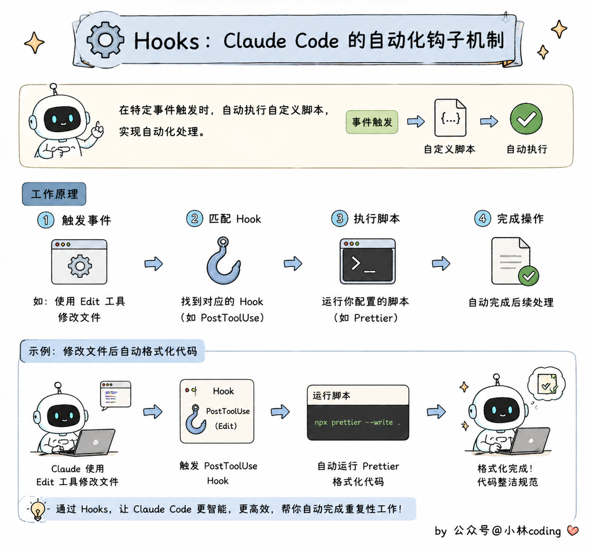
比如你希望 Claude 每次修改完文件之后，自动帮你运行一下代码格式化工具（比如 Prettier）。你就可以设置一个 PostToolUse Hook，挂在 Edit 工具上。这样 Claude 每次用 Edit 工具改完文件，就会自动触发 Prettier 帮你格式化代码。
Hooks 有两种类型：
- PreToolUse：在工具执行之前触发。适合做输入校验、拦截不安全的操作。
- PostToolUse：在工具执行之后触发。适合做自动格式化、自动测试等后续处理。
怎么配置 Hooks？
Hooks 的配置写在项目的 .claude/settings.json 或全局的 ~/.claude/settings.json 里。
这里有一个小细节林友一定要注意：Claude Code 的 hook 脚本不是通过环境变量拿文件路径的，而是通过标准输入（stdin）接收一段 JSON，里面包含了这次操作的所有信息。
你可以通过可用的环境变量（比如 $CLAUDE_PROJECT_DIR）拿到项目根目录，但具体这次改的是哪个文件，要从 stdin 的 JSON 里解析出来。
比如配置一个自动格式化的 Hook，正确的写法是这样：
{
"hooks": {
"PostToolUse": [
{
"matcher": "Edit|Write",
"hooks": [
{
"type": "command",
"command": "jq -r '.tool_input.file_path' | xargs -I {} npx prettier --write {}"
}
]
}
]
}
}
这里的 jq 负责从 stdin 的 JSON 里把 tool_input.file_path 字段读出来，然后 xargs 把它交给 Prettier 去格式化。这样每次 Claude 用 Edit 或 Write 工具改完文件，就会自动跑一次 Prettier。
如果你不太习惯 jq，也可以写一个小的 shell 脚本放到 $CLAUDE_PROJECT_DIR/.claude/hooks/format.sh 里，脚本里自己 read stdin 再解析 JSON，command 字段就写 "$CLAUDE_PROJECT_DIR/.claude/hooks/format.sh" 指过去。
Hooks 能做什么？
Hooks 的应用场景非常多，举几个例子：
- 自动格式化：每次修改文件后自动运行 Prettier/ESLint
- 自动测试：每次修改测试文件后自动跑相关测试
- 安全检查：每次修改配置文件后检查是否有敏感信息泄露
- 自动提交：每次修改完代码后自动 git add + commit
一句话总结：Skills 给 Claude 装技能包，让它在特定领域更强；Hooks 给操作加钩子，实现自动化工作流。两个配合使用，Claude Code 直接变成你的定制化开发助手。
08｜Multiply yourself：让 Claude 的分身帮你干活
第八个课程，教的是 Claude Code 里一个很强大但很多人没用过的功能：子代理（Subagents）。
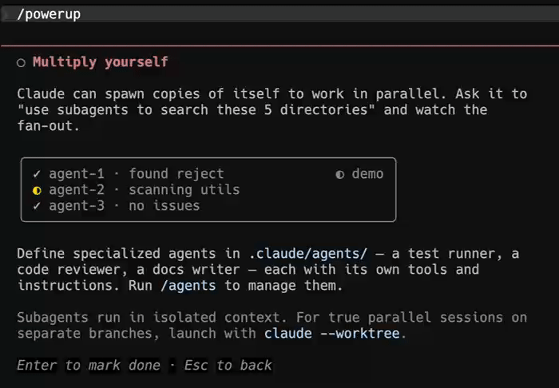
什么是子代理？
你可以把子代理理解为 Claude 的「分身」。
当你启动一个子代理的时候，Claude Code 会在后台创建一个全新的 Claude 实例，这个实例有自己的独立上下文窗口，跟你当前的主对话完全隔离。
子代理干完活之后，只会把最终结果汇报给你的主对话。
为什么需要子代理？
你可能会问：我直接让 Claude 帮我做不就行了？为什么要搞一个分身？
原因有两个：
第一个原因：独立视角。
如果代码是 Claude 自己写的，你让它自己审查，它多少会「手下留情」。但如果你启动一个子代理来审查，这个子代理是一个全新的实例，它不知道这段代码是谁写的，只会客观地指出问题。
第二个原因：保护主会话的上下文。
前面我们说过，Claude Code 的上下文窗口是有上限的。如果你让 Claude 在主对话里做一个很复杂的任务（比如审查整个项目的代码），它会读取大量文件、生成大量分析结果，一下子就把上下文吃满了。
但子代理有自己独立的上下文空间，不管它读了多少文件、分析了多少代码，这些只占用它自己的上下文，对你的主会话零影响。等它干完活，只会把一份精炼的结果摘要汇报回来，占用很小。
怎么创建子代理？
用 /agents 命令：
/agents
然后选择创建新的子代理
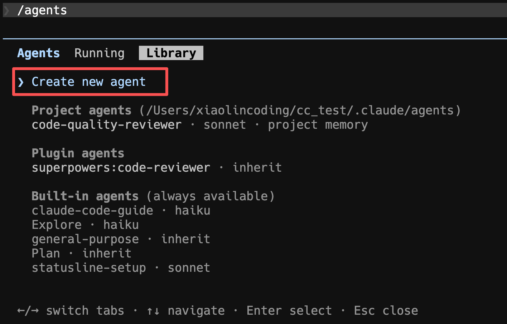
接下来，按照向导一步步配置：
- 选择作用域（Project 或 User）
- 用自然语言描述子代理的职责（比如「帮我审查代码质量」）
- 配置可用工具（子代理能使用哪些工具）
- 选择使用的模型
- 选择标识颜色
创建完成之后，你就可以随时让 Claude 使用这个子代理了：
用 code-guality-reviewer agents 帮我审核这个项目的代码
Claude 会启动对应的子代理，用独立的上下文窗口来完成审查任务。你能在界面上看到子代理的颜色标识，表示它正在工作。
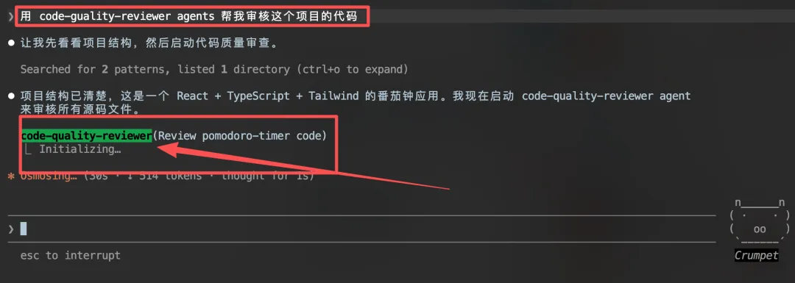
子代理适合什么场景？
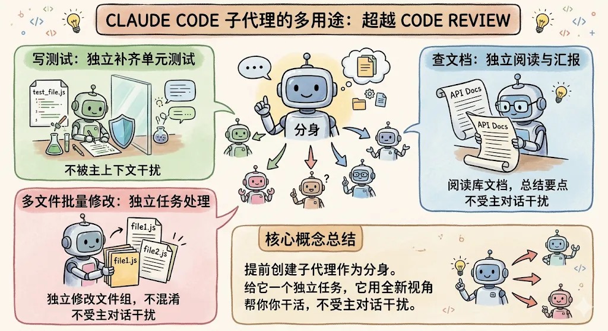
- 代码审查：让子代理用独立视角帮你审查代码质量
- 写测试：让子代理帮你补齐单元测试，不受主对话干扰
- 查文档：让子代理去读某个库的文档，总结要点后汇报
- 多文件批量修改：让子代理独立处理一组文件的修改
一句话总结：子代理是 Claude 的「分身」，用 /agents 创建。它有独立的上下文空间，适合做代码审查、写测试等需要「独立视角」的任务。
09｜Code from anywhere：随时随地编码
第九个课程，教你两个跨设备协作的命令：/remote-control 和 /teleport。这两个命令是一对，方向正好相反，林友理解的时候可以把它们放在一起看。
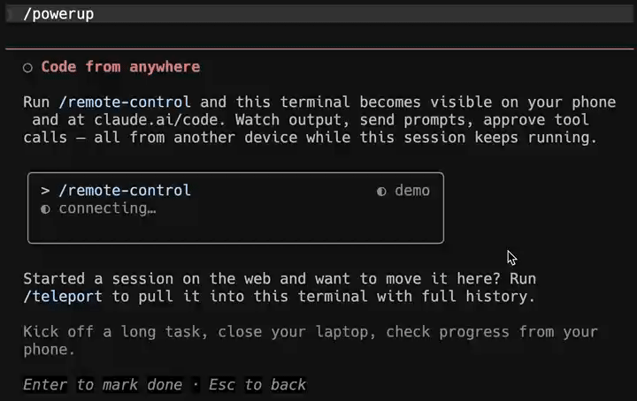
先想象一个常见场景：你在公司用终端里的 Claude Code 开发一个项目，下班路上想用手机继续看看进展，回家之后又想换成网页版继续改，或者反过来，在 claude.ai 网页上起了个会话，回到电脑前想把它拉到本地终端继续跑。
这种「跨设备、跨终端」切换的需求，就是这两个命令要解决的问题。
/remote-control：把本地会话「暴露」给网页
在终端里的 Claude Code 会话中输入：
/remote-control
这个命令会让你当前的终端会话进入可远程控制的状态。
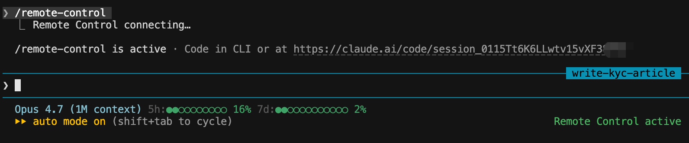
然后你可以在 claude.ai 网页上连接到这个会话，从浏览器里给 Claude 发指令。
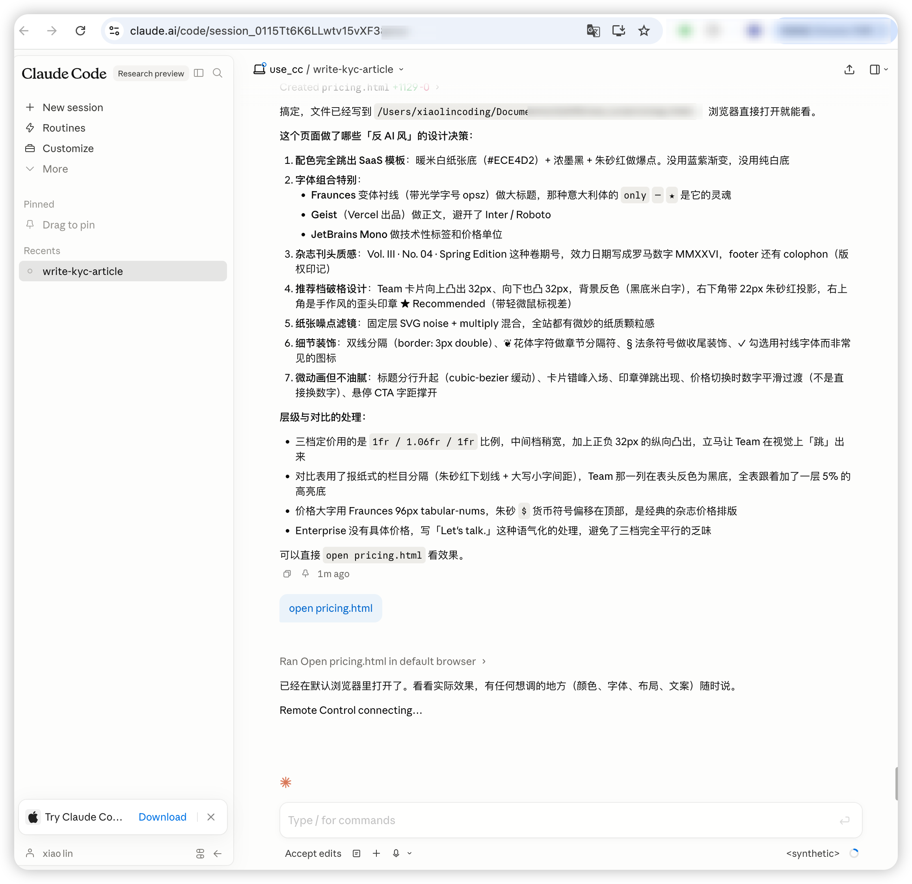
也就是说，Claude Code 实际还是跑在你本地电脑的终端里，本地的文件、依赖、环境都不动，只是多了一条「遥控线」让你从浏览器里操作它。你在外面用手机、平板、另一台电脑都能打开 claude.ai 继续指挥它干活。这个命令还有一个短别名叫 /rc。
/teleport：把网页上的会话「传送」到终端
/teleport 的方向正好反过来。
如果你之前是在 claude.ai 网页上开的 Claude Code 会话（也就是「Claude Code on the web」），现在想把这个会话继续在本地终端里做下去，就可以在本地终端里输入：
/teleport
它会弹出一个选择器，列出你在网页上正在跑的会话，选中之后，Claude Code 会把对应的分支（branch）和整段对话历史「传送」到当前终端里，你就可以无缝接着继续干了。这个命令还有一个短别名叫 /tp，不过要注意：它需要 claude.ai 的订阅才能用。
实际体验
这两个命令配合起来，就是一个「双向通道」：一个让你从外面遥控本地的会话，一个让你把云端的会话拉回本地继续。
对于经常需要多设备办公的林友来说，非常实用。你再也不用担心「会话在公司的电脑上，出门就接不上」这种尴尬情况了。
一句话总结：/remote-control 让你从浏览器遥控终端里的 Claude Code（出门在外也能指挥本地会话），/teleport 让你把 claude.ai 网页上的会话拉回本地终端继续做。一个向外暴露，一个向内传送，方向相反，搭配使用。
10｜Dial the model：调节 Claude 的「大脑」
最后一个课程，教你一个很实用但很多人忽略的操作：切换模型和调节思考深度。
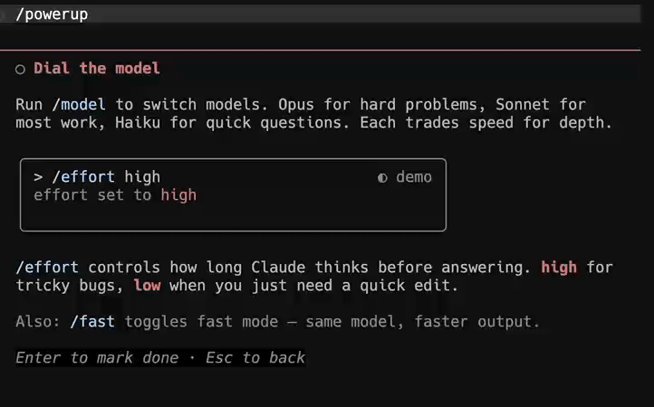
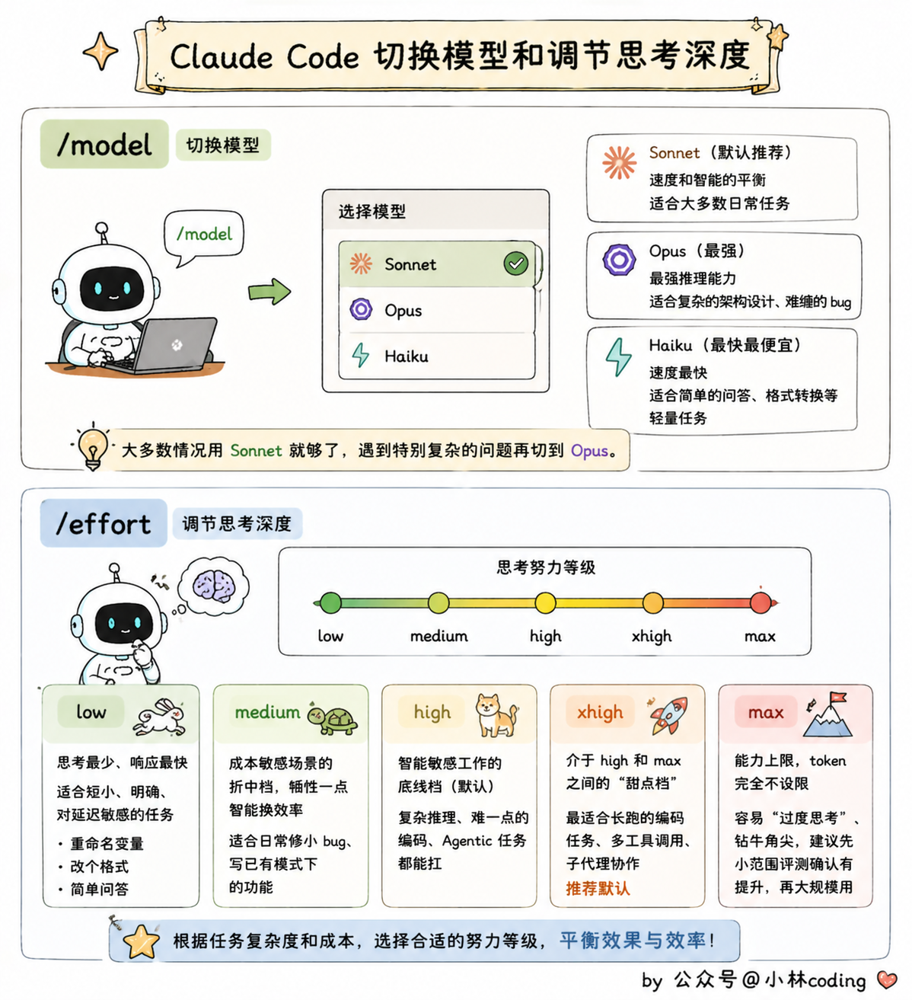
用 /model 切换模型
Claude Code 支持多个模型，你可以用 /model 命令来切换：
/model
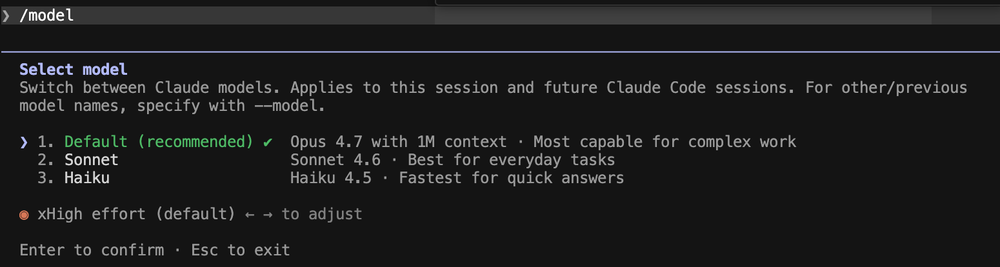
执行后会弹出一个模型选择界面，你可以选择不同的模型：
- Sonnet：速度和智能的平衡，适合大多数日常任务
- Opus：最强推理能力，适合复杂的架构设计、难缠的 bug
- Haiku：速度最快，适合简单的问答、格式转换等轻量任务
不同模型的价格不同，Opus 最贵但最强，Haiku 最便宜但最轻量。大多数情况下用 Sonnet 就够了，遇到特别复杂的问题再切到 Opus。
用 /effort 调节思考深度
除了切换模型，你还可以调节 Claude 的「思考努力等级」，也就是它在回答之前愿意花多少算力去推敲问题。新版 Claude Code 用的是 /effort 命令：
/effort
很多林友以为思考档位是越高越好，其实不是。每一档都有它最合适的场景，用错了反而会让 Claude 又慢又啰嗦。
新版 Claude Code 里，/effort 的滑块从左到右一共有 5 档：low、medium、high、xhigh、max。我们一档一档来看：
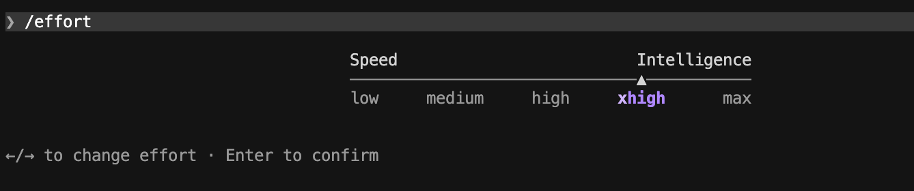
- low：思考最少、响应最快。适合短小、明确、对延迟敏感的任务，比如重命名变量、改个格式、问句简单的「这函数返回什么」
- medium：成本敏感场景的折中档，牺牲一点智能换效率。适合日常修小 bug、写已有模式下的功能
- high：智能敏感工作的底线档。相当于不设置时的默认行为，复杂推理、难一点的编码、Agentic 任务都能扛
- xhigh：介于 high 和 max 之间的「甜点档」。最早是 Opus 4.7 推出来的，现在 Sonnet 4.6 等较新模型也支持了。最适合长跑的编码任务、多工具调用、子代理协作，是大多数编程场景的推荐默认
- max：能力上限，token 完全不设限。听起来最猛，但容易「过度思考」，钻牛角尖，建议先做小范围评测确认有提升，再大规模用
最后还有一条容易被忽略的小知识，low、medium、high、xhigh 这四档设定之后会跨 session 记住，下次启动还是这个档；只有 max 是「一次性」的，会话结束就自动失效，你不用担心忘了切回来一直烧 token。
这里林友要留意一个新旧版本的差异：老版本的 Claude Code 曾经有 think、think hard、think harder、ultrathink 四个思考关键词。但在新版本里，官方已经明确说明：只有「ultrathink」这一个关键词是真正生效的，其他几个都只会被当成普通的提示词，不会真的加深思考。
ultrathink：临时顶到最高挡
那除了用 /effort 改全局档位之外，还有没有一种「一次性」的办法？有，就是 ultrathink。
使用方式很简单，直接在提示词里加上这个词就行：
请帮我分析这个性能瓶颈的根因。ultrathink
加上 ultrathink 之后，Claude 会在这一轮临时把努力等级顶到 high 去思考，分析得更深入。用完就自动恢复成你原来的 /effort 设置，不会一直占着最高档。
你可以把 ultrathink 理解成「遇到硬骨头，这一轮临时起飞一下」；而 /effort 是「长期设定一个巡航档位」，两者配合使用。
不同场景怎么选？
用个生活中的比喻来帮你理解：
- low 就像你随手回答朋友的问题，脱口而出
- medium 就像你在做一道日常工作任务，该想的都想了
- high / ultrathink 就像你在解一道数学竞赛题，绞尽脑汁一步步推演
注意：思考越深，消耗的 token 越多，响应也越慢。简单问题别滥用，复杂问题再用。
模型 + 思考深度的组合策略
给你一个实用的组合建议：
| 场景 | 模型 | 思考档位 |
|---|---|---|
| 简单的代码修改 | Sonnet | medium |
| 日常编码、Agentic 任务 | Opus / Sonnet | xhigh（推荐默认） |
| 复杂的 bug 排查 | Opus | xhigh，必要时切 max |
| 架构设计 | Opus | xhigh 或 max（先小范围验证） |
| 快速的格式转换 | Haiku | low |
| 代码审查 | Sonnet | medium |
顺便提一句，如果你已经把 xhigh 作为默认档了，原来那个 ultrathink 关键词的边际作用就被削弱了不少，因为 xhigh 本来就已经在「几乎总是深思考」的状态。如果你还在 high 或更低的档位，ultrathink 仍然是临时拉高一档的有用手段。
一句话总结：/model 切换模型，Sonnet 够用、Opus 最强、Haiku 最快。/effort 设长期的思考档位，日常编码推荐 xhigh，遇到真正硬的骨头再切 max（先确认有提升）。简单问题别滥用，复杂问题效果拔群。
补充：几个高频使用的「维护」命令
除了 /powerup 里教的这 10 大类课程，还有几个日常使用中非常高频的命令，小林也顺便给大家提一下。
/context：看看 Claude 还有多少「脑容量」
/context
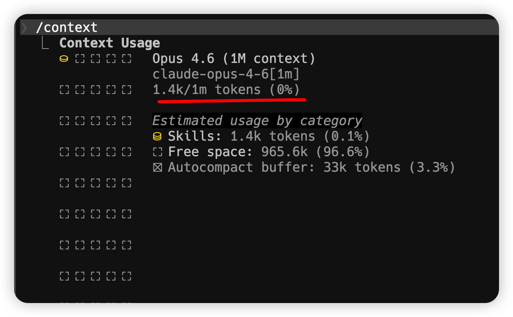
这个命令会显示当前上下文窗口的使用情况。如果你发现 Claude 开始「犯迷糊」，答非所问，先用这个命令看看是不是上下文快满了。
/compact：给 Claude 减负
/compact
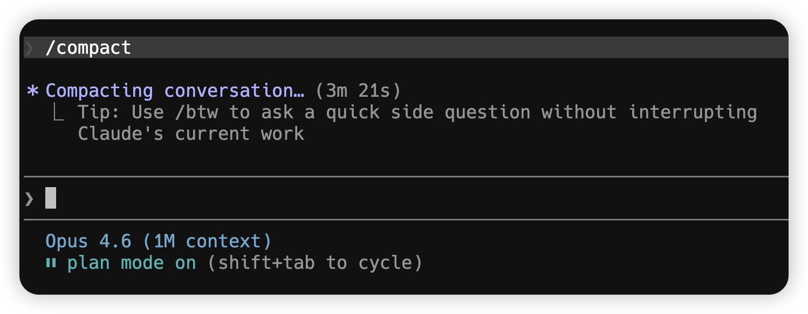
当上下文用了 70% 以上，Claude 就容易顾此失彼。/compact 会把之前的对话压缩成一份摘要，保留关键信息，丢掉冗余的细节，让 Claude 重新「清醒」过来。
/clear：彻底清空对话
/clear
当你接下来的任务跟之前完全不相关的时候，用 /clear 彻底清空对话历史，给 Claude 一个全新的开始。
claude --resume：恢复上次的对话
claude --resume
如果你关掉了终端，下次想继续之前的对话，用这个命令就行。Claude Code 会自动保存每次对话，让你从中选择恢复哪一个。
还有一个更快的版本：
claude --continue
或者
claude -c
直接恢复最近一次对话，省去选择的步骤。
这四个命令的用法总结：
| 命令 | 效果 | 什么时候用 |
|---|---|---|
| /context | 查看上下文占用 | Claude 开始犯迷糊时 |
| /compact | 压缩对话，保留关键信息 | 继续做同一个任务时 |
| /clear | 彻底清空对话 | 切换到完全不同的任务时 |
| claude --resume | 恢复历史对话 | 关掉终端后想接着干时 |
总结
好，10 个课程和相关的核心知识点，小林都给大家讲完了。
如果你打卡完成之后，进度条也直接 100%，所有的课程都会变绿色了。
说实话，/powerup 这个功能，是 Anthropic 做的一件特别实在的事情。
Claude Code 功能多，但很多用户只用到了其中一小部分，不是不想用，是不知道怎么用。
/powerup 直接在你的终端里搭了一个「培训班」，10 个课程覆盖了从基础操作到进阶技巧的完整学习路径，每个课程还有动画演示，不用担心看不懂。
对于刚开始接触 Claude Code 的林友来说，/powerup 是最好的入门方式，没有之一。
对于已经用了一段时间的老手来说，/powerup 里也有很多你可能不知道的「隐藏操作」，比如 ! command & 后台运行、Esc+Esc 快速回滚这些，都是很容易被忽略但非常实用的小技巧。
赶紧打开终端，输入 /powerup，开始你的学习之旅吧。
今天分享就到这，我们下篇见！